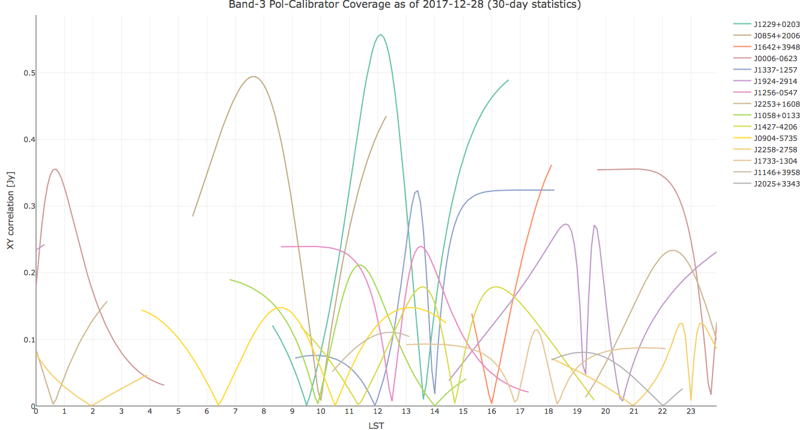
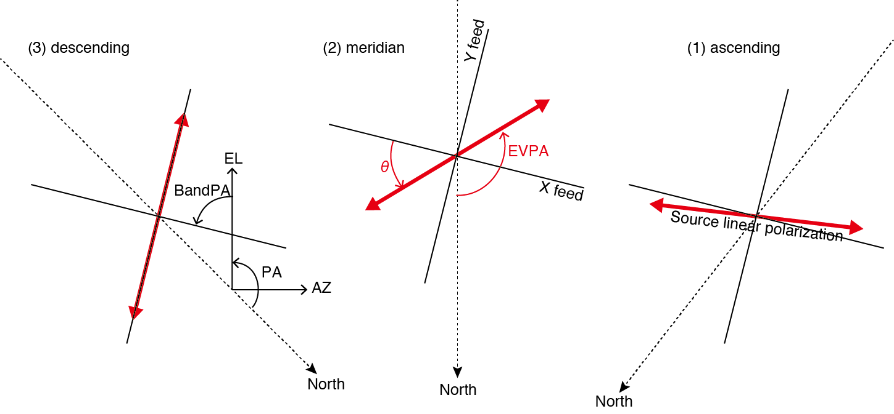

The XY plots show expected XY correlation amplitude with ALMA as a function of LST.
How to show the plot

Click desired band then a new browser tab appears like the figure above. This is an interactive plot.
- Mouse over a line then source name and elevation angle are displayed.
- Single click a source name in the legend in the right side, to toggle appearance/disappearance of its line.
- Double click a source name in the legend in the right side, to toggle appearance/disappearance of other lines.
- Left-button drag to specify a rectangular area to magnify. Double click for back to whole area.
What is this plot
The plot show expected amplitude of cross correlation between X and Y polarizations in the unit of Jansky. The expected XY cross correlation, ⟨XY∗⟩ is given by
⟨XY∗⟩=Ucos2ψ−Qsin2ψ+iV(1)
where Q,U, and V are polarized components of Stokes parameters. Here, the plot omits Stokes V. Q and U of each source are derived from 30-day statistics of the Grid Survey observations. ψ is the position angle of the X feed projected on the sky, which is given by ψ=PA+BandPA where PA is the parallactic angle and BandPA is the receiver-specific X-feed orientation. ALMA antennas employ the ALT-AZ mount system and the parallactic angle is given by
PA=atan2(−cosϕsinAZ,sinϕcosEL−cosϕsinELcosAZ)(2)
where ϕ, AZ, and EL are latitude, azimuth, and elevation, respectively. The BandPA of ALMA antennas are set as
| Band |
1 |
2 |
3 |
4 |
5 |
6 |
7 |
8 |
9 |
10 |
| BandPA (deg) |
45.0 |
-45.0 |
80.0 |
-80.0 |
45.0 |
-45.0 |
36.45 |
90.0 |
-90.0 |
0.0 |
This figure shows the relation between PA and XY correlation amplitude. The orientation of the source linear polarization (red arrows) and X, Y feeds are illustrated in the AZ-EL coordinate. By the diurnal motion, the position angle of the source linear polarization rotates with respect to the feeds. The angle between the X feed and the source linear polarization is given by θ=PA+BandPA−EVPA, where EVPA (Electric Vector Position Angle) is given by 12atan2(U,Q). The amplitude of ⟨XY∗⟩ peaks when θ=±45∘or±135∘, while it becomes null at θ=0∘,±90∘,or180∘.

The aim of this plot
THe plot aims to choose the bset polarization calibrator source at a given LST and a receiver band. In the polarization calibration process, it is necessary to calibrate the XY phase which is the phase offset between X and Y polarizations. The XY phase is measured by the phase of ⟨XY∗⟩ toward the polarization calibrator. The accuracy of XY phase depends on the SNR (signal-to-noise ratio) of ⟨XY∗⟩. Thus, it is crucial to select the polarization calibrator which shows high enough XY correlation amplitue.
Caution
Choose the right Band to plot. Because BandPA (feed orientation) depends on receiver band, the best calibrator can differ between the Bands.